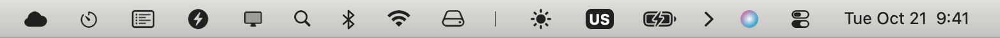
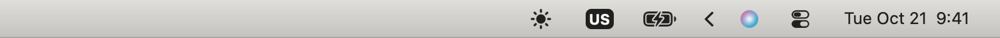

One divider. Two states.
The divider is a pipe and an arrow. Everything left of the pipe can be hidden; click the arrow to collapse or expand it.


Why open source
Hidebar asks for the Accessibility permission, so you should be able to read what it does with it.
Auditable
The whole app is on GitHub under the MIT license. Read it, build it yourself, or send a fix.
No telemetry
No analytics, no accounts, no network access. Nothing about you ever leaves your Mac.
Degrades gracefully
If a permission is missing, Hidebar keeps working with fewer features instead of failing.
Install
Homebrew
brew install --cask pod2metra/tap/hidebarDisk image
Download the DMG from the latest release, open it and drag Hidebar to Applications.
Build from source
git clone https://github.com/pod2metra/hidebar
cd hidebar
# once: a local signing identity
bash scripts/dev_cert.sh
make runNeeds Xcode 27 (Swift 6.4).
First launch
Hidebar is not notarized by Apple, so macOS blocks it the first time. You do this once, with either install:
- Try to open Hidebar, then close the warning.
- Open System Settings → Privacy & Security and scroll down to Security.
- Click Open Anyway next to Hidebar and confirm.
Right-click → Open no longer works around this on macOS 15. The Accessibility permission carries over to updates, because every release is signed with the same certificate. macOS may ask you to choose Open Anyway again after an update.
How to use
- Arrange. Hold ⌘ and drag an icon to the left of the pipe to hide it, or to the right to keep it visible. This is the system's own gesture.
- Collapse. Click the arrow to hide everything left of the pipe, and click it again to show it. Hidebar refuses to hide icons when the arrow would go with them.
- Menu. Right-click, Control-click or middle-click the pipe or the arrow for the menu: How to Use Hidebar…, Quit Hidebar.
- Overflow strip. Icons that don't fit the bar, behind the notch or under long app menus, appear in a strip below the menu bar, and a dot on the arrow tells you some are there. Scroll the strip to see them all; click one to open its own menu.
- Get everything back. Hidebar always starts expanded. If the arrow is ever out of reach, launch the app again to bring every icon back.
Permissions
Hidebar needs one permission, and only asks for it when you click an icon in the strip. Hiding works without it.
| Permission | Why | Without it |
|---|---|---|
| Accessibility | Finds which app owns each icon and clicks icons in the overflow strip. | Hiding still works. The strip lists icons but can't click them. |
FAQ
Why not just use Hidden Bar?
Hidebar follows the same idea as Hidden Bar: one divider, one click. I kept running into bugs with it in my daily work, so I built the one I wanted and took it as a chance to try low-level macOS development. What Hidebar does differently:
- icons stuck behind the notch or under a long app menu stay in a scrollable strip below the bar, always one click away, not tucked into a menu;
- it refuses to collapse when the arrow itself would be hidden, so the divider can't vanish and lock you out;
- the divider is reset at launch and at quit, so a crash never leaves icons hidden;
- a dot on the arrow tells you when icons are stuck behind the notch, even before you grant any permission;
- one permission, Accessibility, asked for only when you need it; hiding works without it;
- the core logic has full test coverage and is checked with mutation testing.
What about the notch?
Icons that end up behind the notch or under a long app menu aren't hidden, they're just unreachable. Hidebar puts a dot on the arrow when that happens and shows them in a strip below the menu bar so you can still click them.
Why does it need Accessibility?
macOS offers no public way to learn which app owns an icon, or to click it for you. Accessibility is how Hidebar reads icon positions and clicks icons in the strip. Hiding with the divider works without it.
Does it phone home?
No. Hidebar has no telemetry and makes no network connections. The code is public, so you can check.
Why does macOS warn me the first time?
Hidebar is signed with its own certificate but is not notarized by Apple. Notarization needs a paid Apple Developer membership, and Hidebar is a free hobby project, so macOS can't verify it and blocks the first launch. Allow it under System Settings → Privacy & Security → Open Anyway. Every release is signed with the same certificate, so the Accessibility permission carries over to updates; macOS may ask you to choose Open Anyway again after an update. The code is open, so you can audit it or build it yourself.
Which macOS versions are supported?
macOS 15 Sequoia or later.
Will I lose icons if it crashes?
No. The divider's length is restored at launch and at quit, so a crash never leaves an icon hidden.
How do I uninstall it?
Quit Hidebar from its menu, then run brew uninstall --zap --cask hidebar. If you installed from the DMG, drag the app to the Trash.